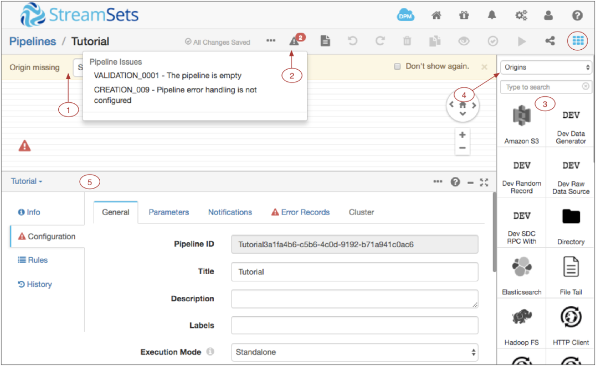
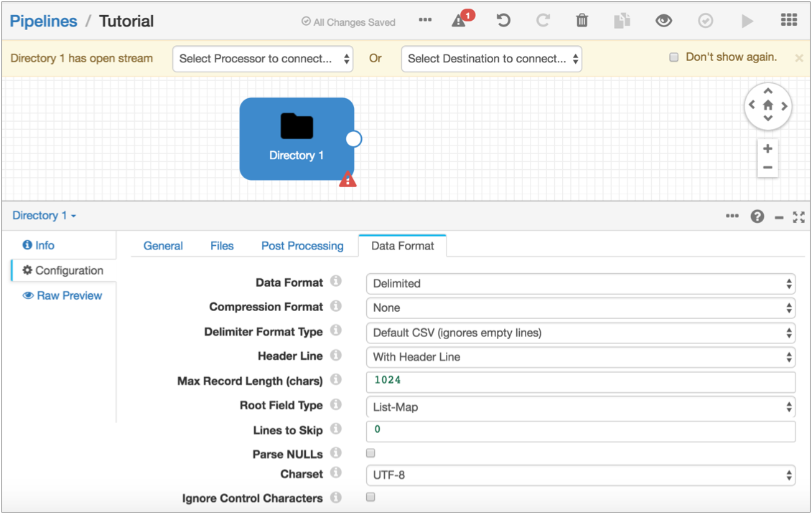
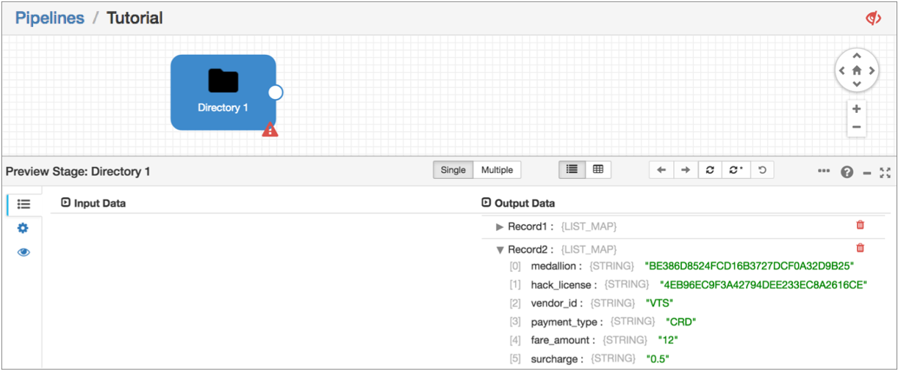
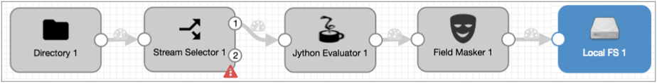
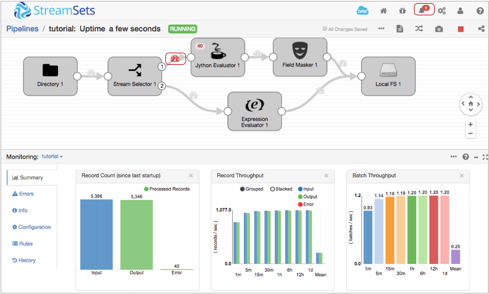

Basic Tutorial
The basic tutorial creates a pipeline that reads a file from a directory, processes the data in two branches, and writes all data to a file system. You'll use data preview to help configure the pipeline, and you'll create a data alert and run the pipeline.
- Configure pipeline properties, primarily error handling.
- Add a Directory origin to represent the data to be processed.
- Preview source data to determine the field-level details needed for the pipeline.
- Use a Stream Selector to route credit card transactions to the primary branch and cash transactions to the secondary branch. We'll define a required field to discard records without a payment type.
- Configure a Jython Evaluator to perform custom processing that determines the credit card type based on the credit card number.
- Add a Field Masker to mask credit card numbers. Use a required field to discard records without credit card numbers.
- Connect both branches to a Local FS destination.
- In the secondary branch, use an Expression Evaluator to add fields to the cash records to match the credit card records. Use data preview to verify the fields to add.
- Add a data rule to raise an alert if too many credit card payments are missing credit card numbers.
- Start the pipeline and monitor the results.
Create a Pipeline and Define Pipeline Properties
When you configure a pipeline, you need to decide what to do with error records. You can discard them or - more productively - write them to file, another pipeline, or to Kafka.
Write error records to one of these locations as a convenient way to deal with error records without having to stop the pipeline.
This tutorial writes the records to a local file, but if you prefer to write error records to Kafka, feel free.
-
Click Save.
An empty canvas displays:

Note a few helpful areas:Number Name Description 1 Pipeline Creation Help Bar Indicates that the origin is missing and offers a list of origins to choose from. If the Pipeline Creation Help Bar does not display, you might have disabled it. To enable it, in the top right corner of the Data Collector window, click the . Clear the Hide Pipeline Creation Help Bar option.
2 Issues icon Click to display the list of pipeline issues found by implicit validation. 3 Stage library panel Displays a list of available origins by default. 4 Stage menu Changes the stages that display in the stage library. Displays all stages by default. 5 Properties panel / Preview panel / Monitor panel When you configure a pipeline, the Properties panel displays the properties of the pipeline or selected stage. You can resize, minimize and maximize the panel. When you preview data, the Preview panel displays the input and output data for the selected stage or group of stages.
When you monitor a running pipeline, the Monitor panel displays real-time metrics and statistics.
Note: Some icons and options might not display in the UI. The items that display are based on the task that you are performing and roles assigned to your user account.
Stage Library icon Toggles the display of the Stage Library panel.
Now we'll start building the pipeline...
Configure the Origin
The origin represents the incoming data for the pipeline. When you configure the origin, you define how to connect to the origin system, the type of data to be processed, and other properties specific to the origin.
-
To add the stage to the canvas, from the Pipeline Creation Help Bar, click . Or, in the Stage Library panel, click the
Directory origin:
 .
The origin displays in the canvas and the Properties panel displays the properties for the stage.
.
The origin displays in the canvas and the Properties panel displays the properties for the stage.

Notice the error icons on the page. When you hover over the Directory error icon or click the Issues icon, a validation message states that the origin has open streams - that means that it's not connected to anything yet. We'll take care of that next.
Preview Data
To become more familiar with the data set and gather some important details for pipeline configuration, let's preview the source data.
- The field that contains payment information - We'll use this to route data in the Stream Selector.
- The field that contains credit card numbers - We'll use this to mask the data in the Field Masker.
When you access data in a field, you specify the field path for the field. The field
path depends on the complexity of the record: /<fieldname> for
simple records and <path to field>/<fieldname> for more
complex records.
Because we're using the List-Map root field type, we can use
/<fieldname>.
To start data preview, all stages must be connected and all required properties defined - though not necessarily correctly. Since the origin is configured and the only stage, the pipeline should be ready to preview as is.
-
Above the pipeline canvas, click the Preview icon:
 .
If the icon is not enabled, make sure you completed all the previous steps for the tutorial. If more than one issue displays in the list, correct any issue except Validation_0011.
.
If the icon is not enabled, make sure you completed all the previous steps for the tutorial. If more than one issue displays in the list, correct any issue except Validation_0011.Validation_0011 just indicates that Directory origin isn't connected to anything yet and does not prevent data preview.
-
Click Run Preview.
The Preview Panel displays a list of 10 output records for Directory in list view. If you drill down a bit, you see that the each record displays an ordered list of field names and values with the data type of each field.
Because the data is read from a file, all fields are strings:

Note that in the Preview panel, the preview records display on the Records tab: . To review or change properties, use the Stage Configuration tab:
 . To change preview properties, use the Preview
Configuration tab: .
. To change preview properties, use the Preview
Configuration tab: . -
Now that we have the information that we need, click the Close
Preview icon:
 .
.
- Payment type information is in the payment_type field and credit card information is in the credit_card field.
- To use these fields in expressions, we'll use their field paths: /payment_type and /credit_card.
- To route records paid by credit card, we'll look for records where the payment type is "CRD".
Route Data with the Stream Selector
To route data to different streams for processing, we use the Stream Selector processor.
The Stream Selector routes data to different streams based on user-defined conditions. Any data not captured by a user-defined condition routes to the default stream.
We'll route credit card transactions to a credit card stream for processing. All other transactions will go to the default stream.
We'll also define a required field to drop records with no payment type. When you define a required field, a record must include data for the specified field to enter the stage. Records that don't include data in required fields are sent to the pipeline for error handling. If you configured the pipeline to write to file, that's where error records go.
To represent data in a field, we use therecord:value function. This returns field values associated with
the field.${record:value('/payment_type') == 'CRD'}Note that we enclose expressions in a dollar sign and curly brackets. You can use single or double quotation marks around strings. For more information about the expression language, see Expression Language.
-
From the Pipeline Creation Help Bar, click . Or, in the Stage Library panel, select the Stream
Selector processor (
 ) and connect the Directory origin to it.
) and connect the Directory origin to it.
-
Click the Add icon:
 .
A condition text box displays in the Property panel, and the corresponding output location appears on the stage in the canvas.
.
A condition text box displays in the Property panel, and the corresponding output location appears on the stage in the canvas.

Use Jython for Card Typing
Next, we'll evaluate credit card numbers to determine the credit card type. You can use an Expression Evaluator to do the same calculations, but with a short script, the Jython Evaluator is easier.
You can use custom scripts with the JavaScript Evaluator and the Jython Evaluator to perform processing that is not easily performed using other Data Collector processors. When using scripts to handle list-map data, the script must treat the data as maps.
The Jython script that we provide creates an additional field, credit_card_type, and generates the credit card type by evaluating the first few digits of the credit card number. The script returns an error message if the record has a credit card payment type without a corresponding credit card number.
-
Add a Jython Evaluator processor to the canvas.
If the Jython Evaluator processor isn’t listed in the stage library, you’ll need to install the Jython stage library first. By default, a full Data Collector installation includes the Jython stage library. The core installation does not include the Jython stage library.
-
In the Data Collector top right toolbar, click the Package Manager
icon:

-
In the Package Manager search field, type “jy” so that the Package
Manager displays the Jython stage library:

-
In the Data Collector top right toolbar, click the Package Manager
icon:

Mask Credit Card Numbers
Now let's prevent sensitive information from reaching internal databases by using a Field Masker to mask the credit card numbers.
The Field Masker provides fixed and variable-length masks to mask all data in a field. To reveal specified positions in the data, you can use custom mask. To reveal a group of positions within the data, you can use a regular expression mask to define the structure of the data and then reveal one or more groups.
(.*)([0-9]{4})The regular expression defines two groups so we can reveal the second group.

Write to the Destination
The Data Collector can write data to many destinations. The Local FS destination writes to files in a local file system.
When you configure the Local FS destination, you define the directory template. This determines the naming convention for the output directories that are created.

Now, we'll go back to the Stream Selector and complete the secondary branch.
Add a Corresponding Field with the Expression Evaluator
The Jython Evaluator script added a new field to the credit payments branch. To ensure all records have the same structure, we'll use the Expression Evaluator to add the same field to the non-credit branch.
This ensures that all records have the same format when written to the destination.
To do this, let's use data preview to verify how the Jython Evaluator adds the credit card type to records.
-
Expand the first output record, scroll down, and notice the new field
highlighted in green: /credit_card_type.

Create a Data Rule and Alert
Now before we run the basic pipeline, let's add a data rule and alert. Data rules are user-defined rules used to inspect data moving between two stages. They are a powerful way to look for outliers and anomalous data.
Data rules and alerts require a detailed understanding of the data passing through the pipeline. For more general pipeline monitoring information, you can use metric rules and alerts.
The script in the Jython Evaluator creates error records for credit card transactions without credit card numbers. We can create a data rule and alert to let us know when the record count reaches a specified threshold.
We'll use an expression with the record:value() function to identify when the credit
card number field, /credit_card, is null. The function returns the
data in the specified field.
Run the Basic Pipeline
The UI enters Monitor mode and shows summary statistics in the Monitor panel. At some point as the pipeline runs, the data alert triggers and the location of the triggered data alert turns red:

Click the data alert icon to view the data alert notification. Then, close the notification and explore the information available in the Monitor panel.Note that when you select an unused part of the canvas, the Monitor panel displays monitoring information for the entire pipeline. When you select a stage, it displays information for the stage.
The Jython Evaluator shows 40 error records. Click the error records number to see the list of cached error records and related error messages.
You can also select the red Data Inspection icon to view information about the data alert and view the error records associated with the data alert.
To continue with the extended tutorial, stop the pipeline.
If you like, you can use data preview to step through the pipeline to review how each stage processes the data. But if you hang in there, you can do it with us in the extended tutorial.